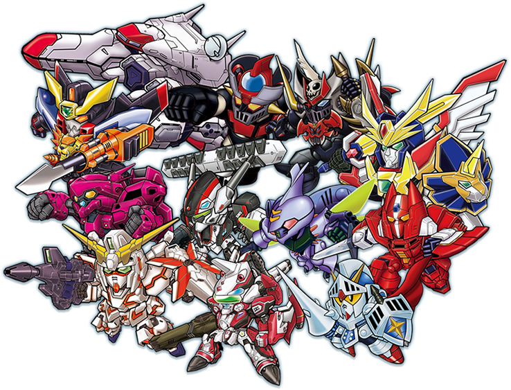

人類の歴史は、常に戦争と共にあった。 しかし、人間は愚かではない。
多くの生命が失われる事となった戦争をきっかけに人類は自らの愚かさを悔やみ、戦いに繋がる技術を封印した。
だが、世界から争いが消える事はなかった。
多くの人間は生きる為に、または欲求を満たす為に、戦いたくなくとも諍いを起こす。
戦いに繋がる技術が封印された世界であっても、人口の増加に伴って発生する資源不足、国土不足などの問題から逃げる事は不可能であった。
また、地球圏は人類同士の問題以外にも、更なる問題に直面する事となる。
正体不明の敵『ＵＥ』や、巨人型異星人『ゼントラーディ』などが地球圏に襲来し始めたのである。
そして人類は、それらの問題を解決する為、再び戦争を始めた…。
時は流れ、人類はゼントラーディと共存の道を歩み始める。